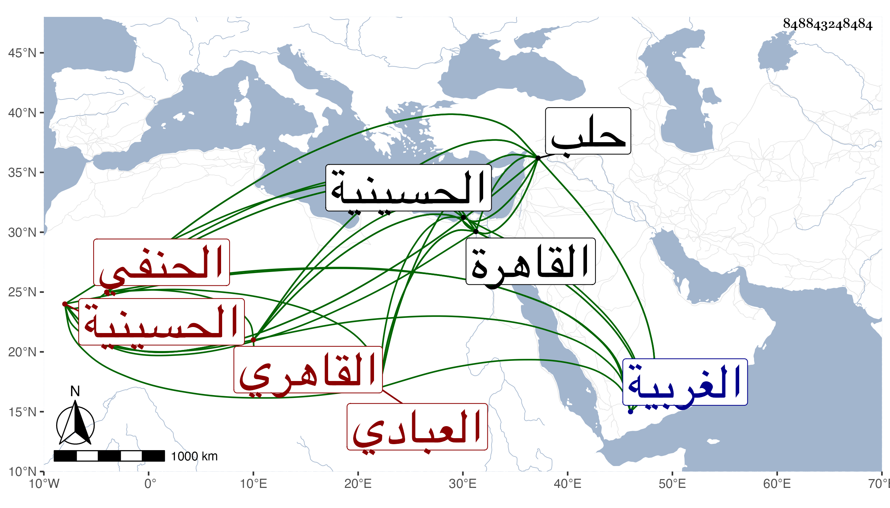

0902Sakhawi.DawLamic.ITO20230111-ara1.EIS1600.848843248484
Biography ID: 848843248484
أحمد بن أبي بكر بن محمد الشهاب العبادي نسبة لمنية أبي عباد قرية من الغربية من أعمال القاهرة ثم القاهري الحنفي . تفقه بالسراج الهندي وفضل ودرس الناس وشغل الناس ثم صاهر القلنجي وناب في الحكم ووقع على القضاء ورأيته شهد في إجازة مؤرخة سنة ست وتسعين ، ودرس بالحسينية وكان يجمع الطلبة ويحسن إليهم وجرت له محنة مع السالمي ثم أخرى مع الظاهر برقوق وأشار إليها شيخنا في أنبائه ، وذكره ابن خطيب الناصرية فقال قدم حلب في سنة ثلاث وتسعين صحبة الظاهر فأقام بها مدة وهي أربعون يوما ورأيته بخدمة البلقيني بجامع حلب وقرأ عليه بعض الطلبة هناك وكان إماما عالما نحويا حسن الشكلة دينا درس وأفتى سنين وانتفع به الطلبة . مات في ليلة الأحد تاسع عشر ربيع الآخر سنة إحدى بالقاهرة وممن أخذ عنه النحو والفرائض الشهاب السيرجي وأذن له بل كتب له تقريظا على أرجوزة له في الفرائض ونحوه .
